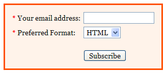
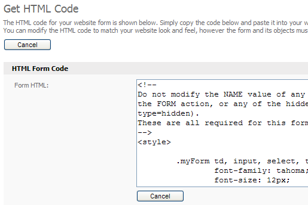

The easiest way to let people signup to your contact list is to create a subscription form. Using the system it's a simple matter of a few clicks to generate the HTML code for a simple subscription form that you can add to any page on your web site. Let's look at how to do that now.
Creating the subscription form
Note: Before you get started you should have already created a contact list. If you are unsure how to do this please see this tutorial. You can also accept other information from your contacts including name, age and sex. To do this please see the custom fields tutorial.
Start by clicking the "Website Forms" link at the top of the screen. You will be taken to the "Manage Website Forms" page. Click the "Create Form" button to create a new form. Start by entering a name for your form, such as "Email Subscription Form". Next, choose a look and feel for your newsletter from the "Form Design" drop down box. You can click the "Preview" link to see how the form will look.

You can choose one of many pre-designed subscription form layouts for your new subscription form.
Make sure you have the form type set to "Subscription" and choose the email format you want your contacts to be signed up form: HTML, text only or HTML and text. If you want your contacts to receive an email to confirm their subscription (this is called double opt-in), then tick the "Require Confirmation" checkbox.
If you don't have a contact form on your web site and you'd like the details of each new contact to be emailed to you as well as being saved to your contact list, click the "Yes, emulate a contact form" checkbox.
Finally, choose one or more contact lists that you want the subscription form to accept contacts for. You can also change the order in which fields will appear on the subscription form using the up and down arrows next to the "Sort Custom Fields" box.
Click the "Next >>" button to continue. Depending on which options you chose, you will see different options on the next page. Complete all fields and if you need help just move your mouse over the blue help icon to the right of the field to learn about that field. In most cases you can simply click "Next >>" and leave the default options in place for this and the following steps.
When you've created your subscription form you will be returned to the "Manage Website Forms" page. Click the "Get HTML" link next to the form you just created to see the HTML code which you can place on your web site.

Getting the HTML code for your new subscription form to place it on your web site.
Edit the page on your web site where you'd like to add the subscription form and paste the HTML code there. Save the file and upload it to your web server using FTP. When you visit your web page you should now be able to accept contacts to your contact list.